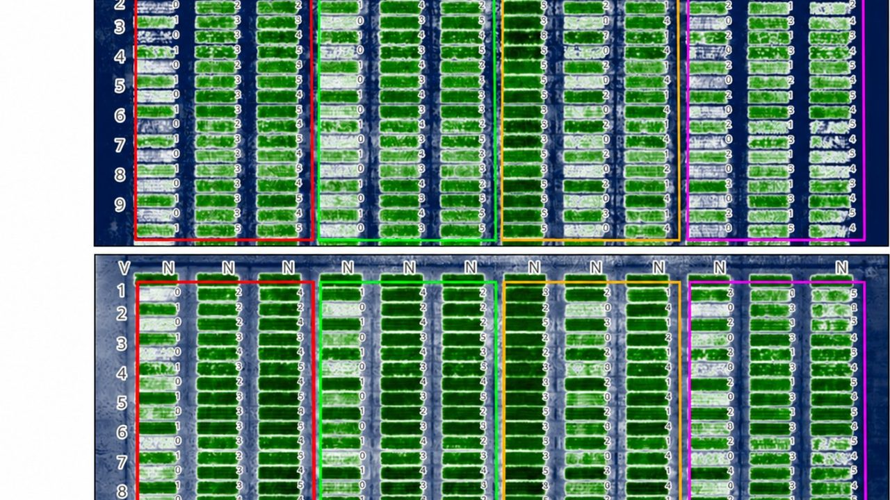
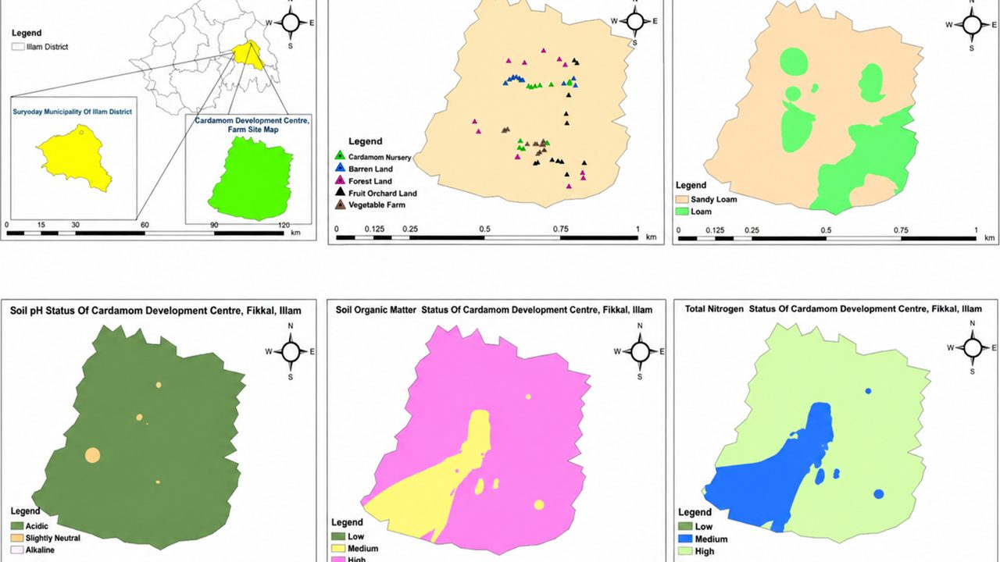
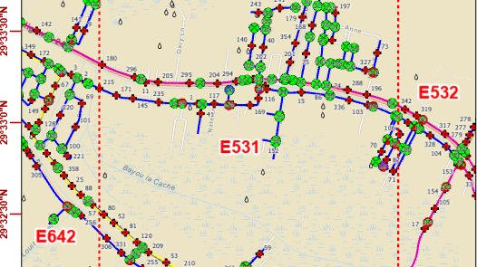
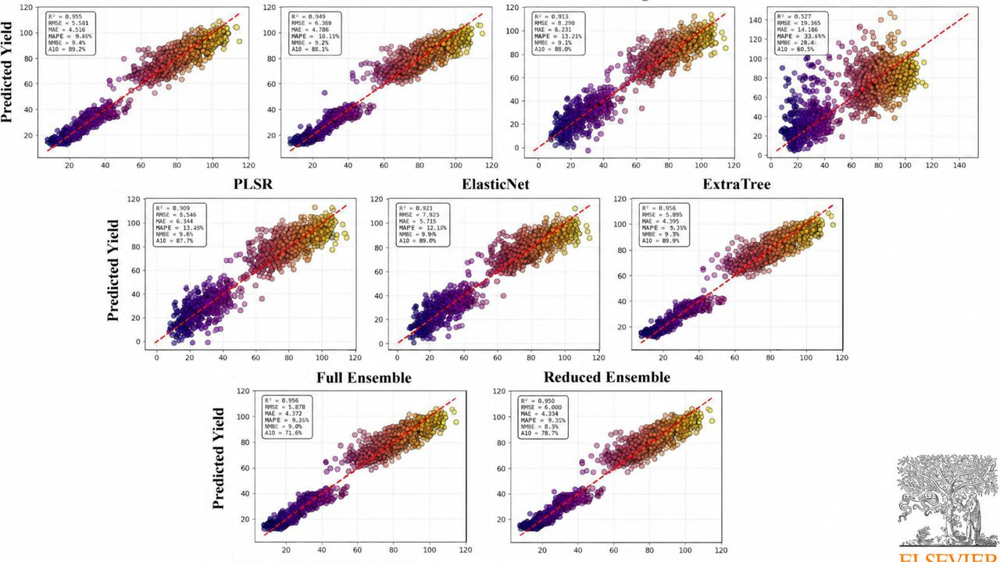
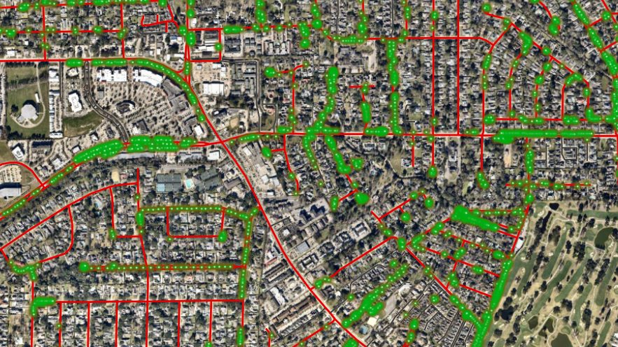

UAV · AI & ML · GIS
UAV Multispectral Imagery Modeling with GIS
12-model benchmark reaching R² = 0.89; published as a first-author paper in Remote Sensing; reproducible Python workflow on GitHub.
30.4515°N 91.1546°W - BATON ROUGE, LA
GIS Analyst | Enterprise GIS | UAV Remote Sensing & ML
I build production Esri solutions - enterprise GIS, offline field systems, web apps, and drone-derived intelligence - for utilities, municipalities, and research.
01 - ABOUT
I’m a GIS Analyst at Global Geospatial Solutions / Global Geospatial Institute in Baton Rouge, Louisiana, where I administer a production ArcGIS Enterprise deployment, build offline and online field systems for water utilities, build and deploy web apps, create centralized web maps for organizations, help them reach geospatial excellence, and train the next generation of analysts. My work sits at the intersection of GIS analysis and excellence, UAV remote sensing, and data modeling. I turn spatial data into decisions.
I earned my M.S. from LSU with a specialization in GIS and remote sensing, where I spent three growing seasons flying multispectral drone surveys over research plots and benchmarking machine-learning models for yield prediction. I’ve authored 3 peer-reviewed papers - two as first author - one in Remote Sensing and one in the Q1 journal Smart Agricultural Technology. That research foundation shapes how I build: measured, reproducible, and grounded in real field data.
02 - EXPERIENCE
Jun 2026 - Present
Global Geospatial Solutions, LLC / Global Geospatial Institute - Baton Rouge, LA
May 2024 - May 2026
Louisiana State University - Baton Rouge, LA
Jan 2024 - May 2024
Louisiana State University - Baton Rouge, LA
03 - PROJECTS

UAV · AI & ML · GIS
12-model benchmark reaching R² = 0.89; published as a first-author paper in Remote Sensing; reproducible Python workflow on GitHub.
EXPERIENCE BUILDER APP
4 operational layers and 50+ mapped community resources live.

ARCGIS · GEOSTATISTICS
Published peer-reviewed article mapping fertility zones for the cardamom-growing area.

FIELD MAPS · OFFLINE GIS
Field crews collect and edit critical infrastructure data with zero connectivity; 16 areas deployed parish-wide.

UAS · EXPLAINABLE AI
Co-authored Q1 journal article in Smart Agricultural Technology; flight-timing guidance growers can actually use.

GIS STRATEGY · TRAINING
Now in Phase 3 - building a centralized web map, dashboard, Field Maps solution, and Experience Builder application.
04 - PUBLICATIONS
Pokharel, R., Gentimis, T., Kongchum, M., Tubana, B., Adhikari, R., & Setiyono, T. (2026). Rice Yield Estimation Based on Machine Learning Applied to UAV Remote Sensing Data. Remote Sensing, 18(10), 1575.
Baker, S., Islam, M. N., Bhandari, M., et al., including Pokharel, R. (2026). Strategically Timed UAS Data Acquisition for Wheat Yield Prediction Using Explainable AI: A Multi-Year Phenology-Aligned Study. Smart Agricultural Technology, 15, 102606.
Pokharel, R., Adhikari, R., Nepal, N., & Budhathoki, R. (2023). Soil Analysis GIS-Based Fertility Assessment and Soil Mapping of Cardamom Growing Area, Pandam, Ilam, Nepal. IJRASET, 5(1).
M.S. Thesis: Digital Agriculture for Rice Nutrient Management and Yield Prediction Using UAV-Based Remote Sensing and Machine Learning - LSU Repository
05 - CERTIFICATIONS
06 - SKILLS
07 - CONTACT
Open to GIS roles (GIS analyst, GIS developer, GIS specialist), data analytics, GeoAI collaborations, and interesting spatial problems.